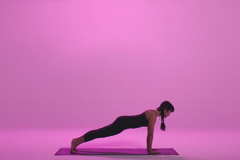
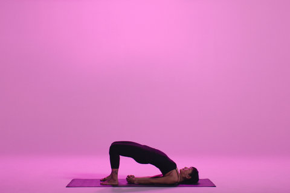
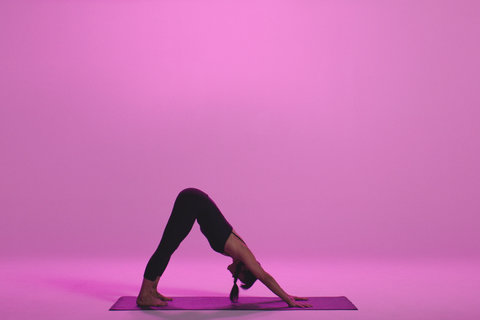

Move slowly through each pose, remembering to breathe as you move. Pause after any pose you find challenging, especially if you are short of breath, and start again when your breathing returns to normal. The idea is to hold each pose for a few, slow breaths before moving on to the next one.

This calming pose is a good default pause position. You can use child’s pose to rest and refocus before continuing to your next pose. It gently stretches your lower back, hips, thighs, knees and ankles and relaxes your spine, shoulders and neck.

Beyond helping improve your balance, it can also strengthen your core, ankles, calves, thighs and spine.
A commonly seen exercise, plank helps build strength in the core, shoulders, arms and legs.
Triangle, which is a part of many yoga sequences helps build strength in the legs and stretches the hips, spine, chest, shoulders, groins, hamstrings and calves.
This is a back-bending pose that stretches the muscles of the chest, back and neck. It also builds strength in the back and hamstring muscles.
Downward-facing dog strengthens the arms, shoulders and back while stretching the hamstrings, calves and arches of your feet. It can also help relieve back pain.